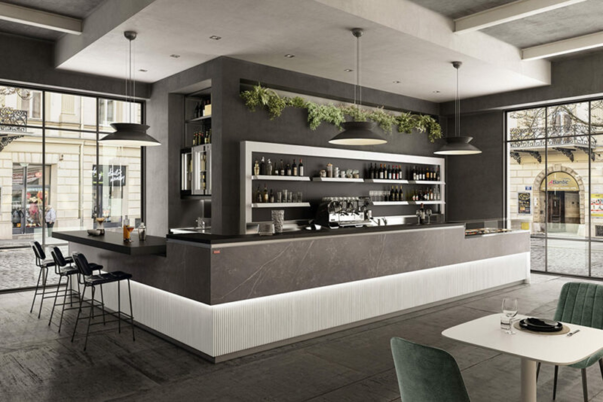
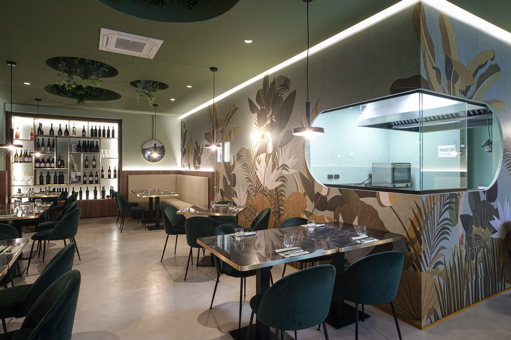
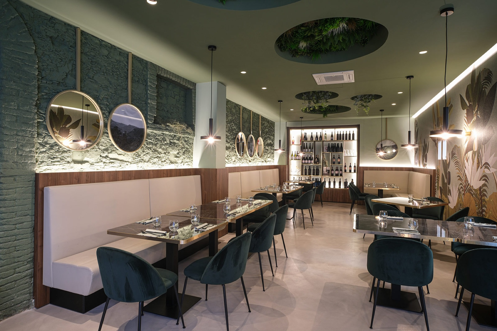

04 — Arredo bar & ristoranti
Il bancone è
la macchina del locale.
Prima di essere un oggetto di design è una postazione di lavoro: distanze, attrezzature sottopiano, passaggi del personale nelle ore di punta. Lo disegniamo sul flusso reale del servizio, poi lo vestiamo con i materiali del progetto.

Il settore
Locali pensati
sul ritmo del servizio.
In un bar o in un ristorante l'arredo lavora quanto il personale. Partiamo da bancone, flussi e numero di coperti, poi definiamo materiali, sedute e luci che danno carattere alla sala e reggono l'uso intensivo.
Bancone
Postazioni di lavoro ergonomiche
Sottopiano, lavelli, macchine e frigoriferi disposti sui gesti del barista e sui passaggi delle ore di punta.
Sala
Coperti e comfort
Panche su sagoma, tavoli e sedute contract scelti per ottimizzare i coperti senza stringere i passaggi.
Materiali
Finiture per uso intensivo
Piani resistenti a calore e macchie, tessuti lavabili e verniciature che reggono le pulizie quotidiane.
Ambiti
- Bar e caffetterie
- Bistrot e ristoranti
- Pizzerie e pub
- Lounge e cocktail bar
- Wine bar ed enoteche
- Gelaterie
- Fast casual e street food
- Food court e rooftop bar


Realizzazioni
Progetti
Arredo bar & ristoranti.
Filtra per ambito per vedere solo i progetti della categoria che ti interessa.